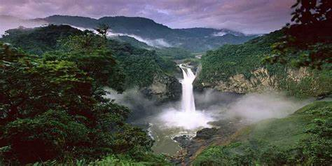

El Parque Nacional Yasuní es una de las áreas con mayor biodiversidad del planeta, ubicado en la Amazonía ecuatoriana. Es hogar de numerosas especies de flora y fauna, así como de comunidades indígenas.
Actividades Recomendadas
- Exploración de la selva con guías locales.
- Navegación en canoa por los ríos amazónicos.
- Observación de vida silvestre como monos, guacamayos y caimanes.
- Interacción con comunidades indígenas y aprendizaje de su cultura.